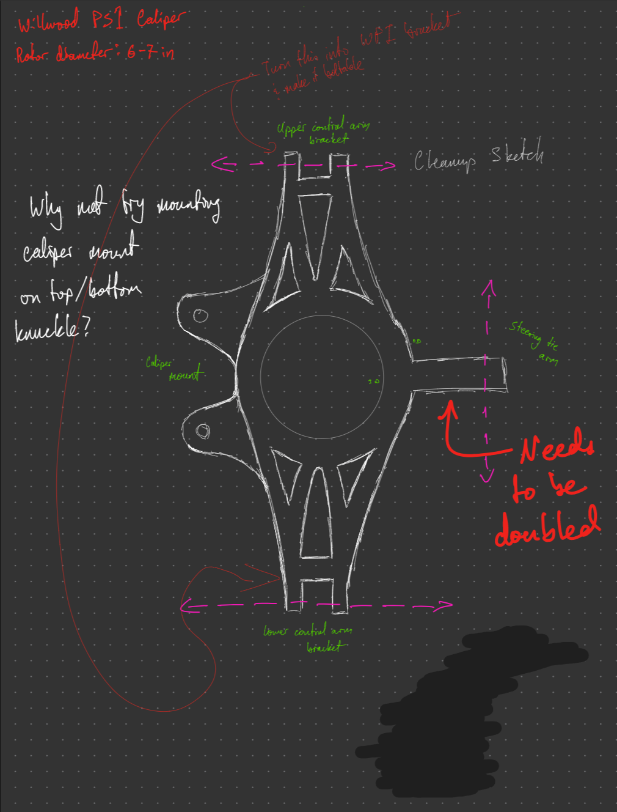
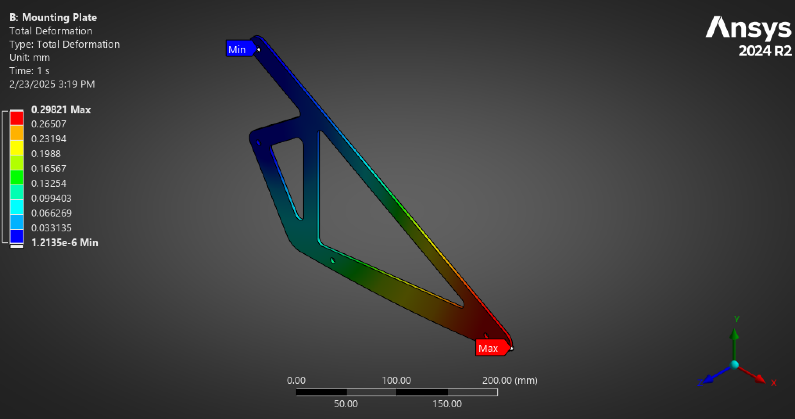

Skills
Mechanical Design and Manufacturing
Capable of handling complex designs from concept to production. I'm familiar with DFM for welding, additive manufacturing, CNC machining, and composite layups. I have experience fabricating parts with CO2/IR/diode laser cutters, CNC mills/routers, lathes, composite layups, and SLA/FDM printing.
- SolidWorks (CAD)
- Fusion360 (CAD)
- HSMWorks (CAM)

Finite Element Analysis (FEA)
I analyzed parts allowing for cost-effective design and stronger, lighter parts. I've used topology optimization to identify areas of improvement on complex geometries. I've also verified simulations using Instron machines, strain gauges, IMU's, and static/dynamic loading tests.
- Solidworks FEA
- ANSYS Structural (w/ FSI)
- ANSYS ACP (composites analysis)

Computational Fluid Dynamics (CFD)
Familiar with various commercial and NASA CFD platforms. Capable of creating high-quality meshes in multiple meshing softwares. I've scripted and automated geometry, meshing, solver, and post-processing workflows for faster iterations. I have CFD experience spanning from FSAE race cars to hypersonic vehicles and internal ramjet flowpaths.
- Pointwise (meshing)
- ANSYS Fluent (meshing and solving)
- StarCCM+ (solver)
- Fun3D (solver)
- TecPlot (post-processing)
- ANSYS Ensight (post-processing)

Composite Design and Manufacturing
Capable of designing and manufacturing structural aerodynamic components using wet-lay and infusion fabrication methods. Experienced with using carbon fiber, fiberglass, nomex honeycomb core, foam core, and lantor soric core. I've designed and fabricated cost effective prototype molds in a limited manufacturing space that achieved Class-A finishes.